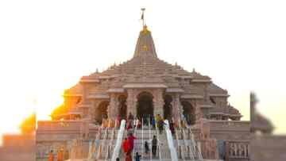

🕉️ Shri Ram Janmabhoomi Mandir, Ayodhya
Divya Ayodhya Dham • Uttar Pradesh, India
Ayodhya – The Divine City of Lord Rama
Ayodhya, located on the banks of the sacred river Saryu in Uttar Pradesh, is one of the holiest cities in India. It is believed to be the birthplace of Lord Rama, the seventh avatar of Lord Vishnu. The Shri Ram Janmabhoomi Mandir stands as a magnificent symbol of faith, devotion, and India's rich cultural heritage.
The grand temple, built in traditional Nagara style architecture, features intricate carvings, towering shikhars, and beautifully decorated pillars. Visitors from across India and the world come to Ayodhya to experience its spiritual atmosphere and heritage.
✨ Why Visit Ayodhya?
- Darshan of Ram Lalla at the grand Ram Mandir
- Visit the Saryu River Ghats
- Explore Hanuman Garhi, Kanak Bhawan & Dashrath Mahal
- Experience the evening Saryu Aarti
- Explore the ancient heritage of Ayodhya Dham
🧳 Travel Tips for Ayodhya
Best Time
October to March is generally pleasant for travel.
Darshan
Check official temple information for current timings and entry arrangements.
Stay
Hotels and dharamshalas are available around Ayodhya Dham.
Photography
Follow local and temple rules regarding photography.
📸 Ayodhya Gallery